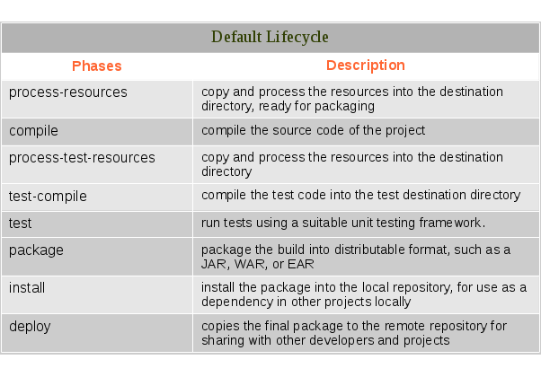
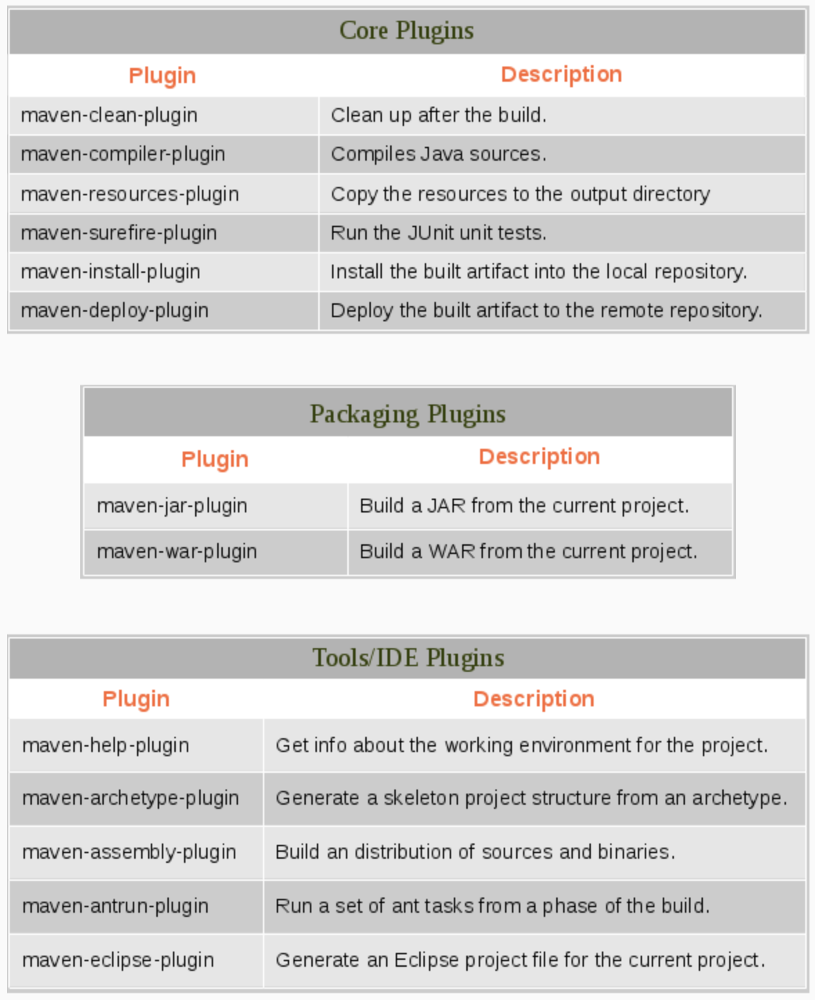
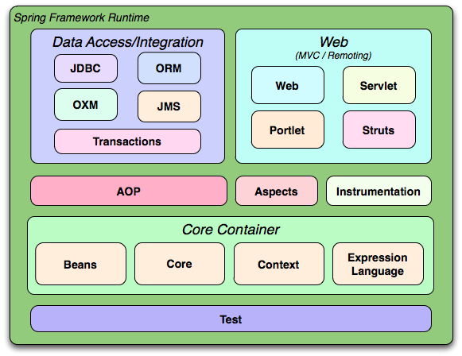

Se refiere a una arquitectura donde el software está diseñado para tener distintas funcionalidades separadás fisica y lógicamente.
JPA (Java Persistence API) es una especificación para acceder, persistir y manejar la información entre objetos y una base de datos relacional
JPA por sí solo es una spec definida a través de una serie de interfaces. No es un producto, y no puede persistir ni leer nada de una base de datos. Eso es tarea de las distintas implementaciones que existen.
Hibernate es una herramienta de mapeo objeto-relacional (ORM) para la plataforma Java (y disponible también para .Net con el nombre de NHibernate) que facilita el mapeo de atributos entre una base de datos relacional tradicional y el modelo de objetos de una aplicación, mediante archivos declarativos (XML) o anotaciones en los beans de las entidades que permiten establecer estas relaciones.
Maven nació como una herramienta para poder facilitar el building de una aplicación. Con el tiempo, creció su popularidad y sus responsabilidades:
El POM (Project Object Model) es un archivo xml que define al proyecto (dependencias, configuraciones, build, etc..).
4.0.0
org.fiuba.demo
project
1.0
El Build Lifecycle es una secuencia bien definida de fases. Puede verse como un workflow, donde las fases serían los pasos que son ejecutados uno luego del otro.
Las dependencias deben definirse en el pom.xml. Maven descargará la dependencia de su repositorio central, y la guardará localmente.
4.0.0
com.xyz
simple-app
1.0
commons-lang
commons-lang
2.4
El core de maven es chico, pudiendo resolver solamente el parseo del pom.xml, y manejo de los ciclos de vida y las fases. Maven no sabe como compilar el código, o armar un .jar.
Spring es un framework opensource que permite crear aplicaciones java, que surgió debido a la complejidad que existia para crear aplicaciones con otros frameworks, como EJB (enterprise java beans)
Also known as the Hollywood Principle: Don't call us, we'll call you
“One important characteristic of a framework is that the methods defined by the user to tailor the framework will often be called from within the framework itself, rather than from the user's application code. The framework often plays the role of the main program in coordinating and sequencing application activity. This inversion of control gives frameworks the power to serve as extensible skeletons. The methods supplied by the user tailor the generic algorithms defined in the framework for a particular application.”
Una aplicación disponemos de muchos objetos que se relacionan entre sí mediante composición. Luego, para relacionar dos objetos tendriamos que pasarle la instancia de uno al otro.
Esto puede volverse facilmente tedioso cuando la cantidad de objetos crece.
@Component
public class FooFormatter {
public String format() {
return "foo";
}
}
@Component
public class FooService {
@Autowired
private FooFormatter fooFormatter;
}
public class FooService {
private FooFormatter fooFormatter;
@Autowired
public void setFooFormatter(FooFormatter fooFormatter) {
this.fooFormatter = fooFormatter;
}
}
public class FooService {
private FooFormatter fooFormatter;
@Autowired
public FooService(FooFormatter fooFormatter) {
this.fooFormatter = fooFormatter;
}
}
Spring Framework comprende diversos módulos que proveen un rango de servicios
¿Qué problema resuelve?
Supongamos que necesitamos armar una aplicación web. Todas las aplicaciones web tienen necesidades similares:
org.springframework
spring-webmvc
4.2.2.RELEASE
com.fasterxml.jackson.core
jackson-databind
2.5.3
org.hibernate
hibernate-validator
5.0.2.Final
log4j
log4j
1.2.17
org.springframework.boot
spring-boot-starter-web
Spring WebFlux surge de la necesidad de un stack no bloqueante que pueda manejar mejor la concurrencia, con un menor número de threads, y que escale con menor cantidad de recursos.
Spring Cloud provides tools for developers to quickly build some of the common patterns in distributed systems. Coordination of distributed systems leads to boiler plate patterns, and using Spring Cloud developers can quickly stand up services and applications that implement those patterns.